Sedang berlangsungOtomotif
Pameran Otomotif Senayan City
Salah satu Event Otomotif yang berjalan pada pekan ini, di mal Senayan City

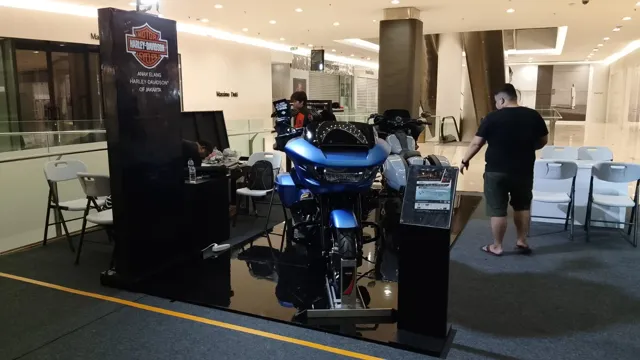
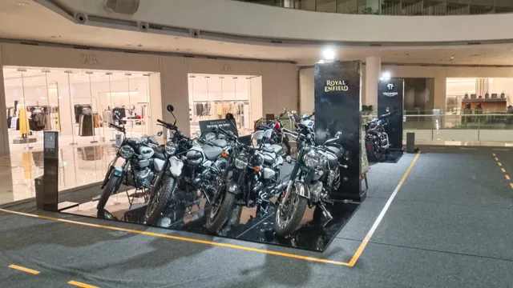
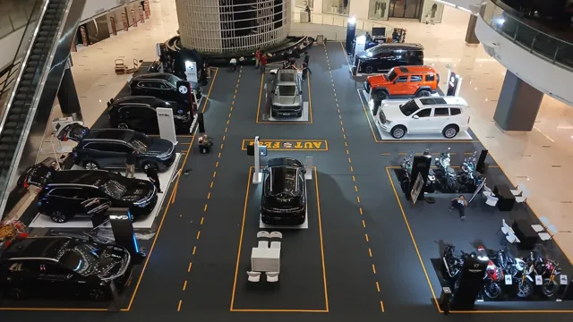
Jenis event yang rutin kami selenggarakan di mal mitra, lengkap dengan dokumentasinya.
Jadwal dan dokumentasi pameran WRS dari minggu ke minggu di berbagai mal.
Salah satu Event Otomotif yang berjalan pada pekan ini, di mal Senayan City



Pameran otomotif di Mall Ambassador, Jakarta Selatan, selama satu pekan.

Tempat merek, dealer, dan calon pembeli bertemu langsung di area publik mal.
Pameran otomotif adalah salah satu event andalan WRS. Berbagai merek dan dealer menampilkan unit terbaru di area mal, sehingga pengunjung bisa melihat, membandingkan, dan bertanya langsung kepada tenaga penjual.
Bagi peserta, format ini efektif untuk menjaring calon pembeli dan memperkuat merek. Tim WRS membantu penataan area, alur pengunjung, dan promosi event.

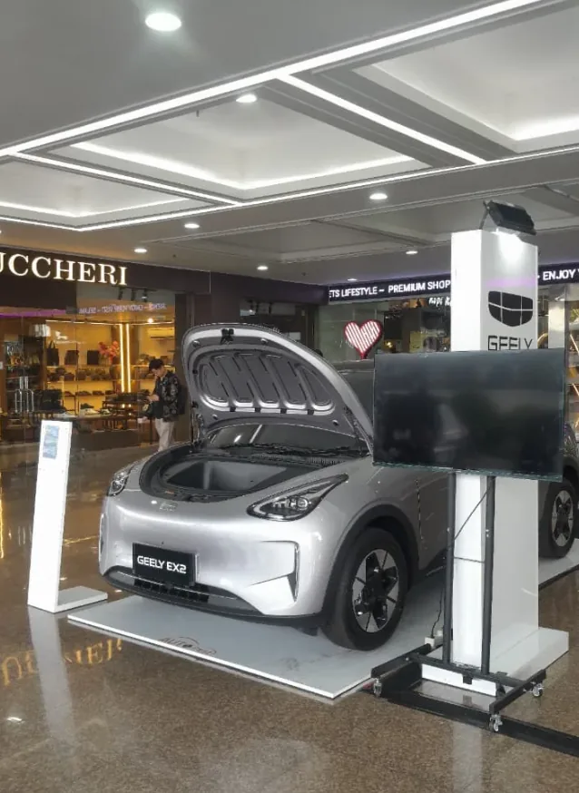
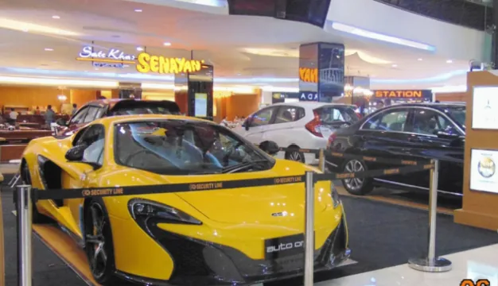
Satu event, banyak kategori usaha dalam satu area pameran.
Pameran multi produk menghadirkan beragam bisnis sekaligus, seperti perbankan, properti, teknologi, travel, dan kebutuhan rumah tangga. Pengunjung mal bisa menjelajahi banyak penawaran dalam satu kunjungan.
Format ini cocok untuk bisnis yang ingin tampil di mal tanpa menyelenggarakan acara sendiri. Kami menyiapkan tempat, penataan, dan promosinya.

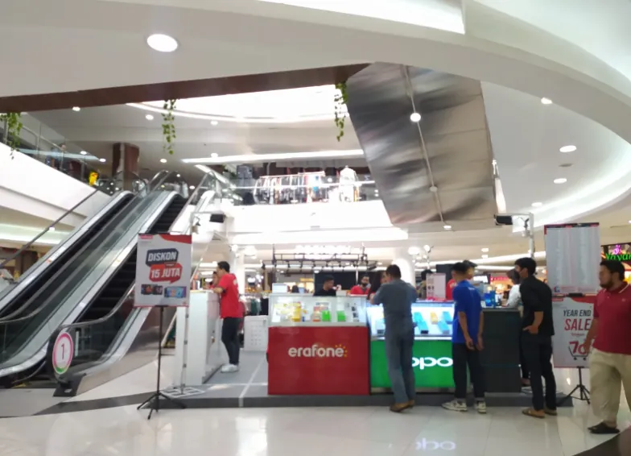
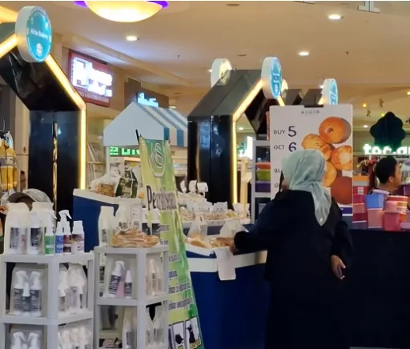
Perlengkapan rumah dan interior, dipamerkan langsung kepada calon pembeli.
Pameran furniture mempertemukan produsen dan penjual perabot dengan pengunjung yang sedang mencari perlengkapan rumah. Produk bisa dilihat, disentuh, dan dibandingkan secara langsung.
WRS mengatur tata letak area pameran agar setiap produk mudah dilihat dan pengunjung nyaman berkeliling.

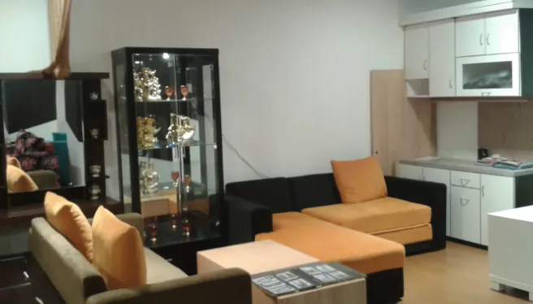
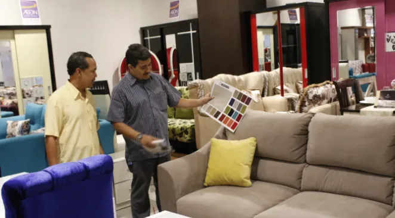
Ruang berjualan yang terjangkau untuk fashion, F&B, aksesori, dan usaha kecil.
Bazaar menyediakan counter dan kios di mal bagi pelaku usaha yang ingin bertemu pembeli secara langsung. Kategori yang biasa hadir antara lain fashion, F&B, dan aksesori.
Baru pertama kali berjualan di mal? Tim kami siap membantu memilih lokasi, tanggal, dan ukuran space yang sesuai.

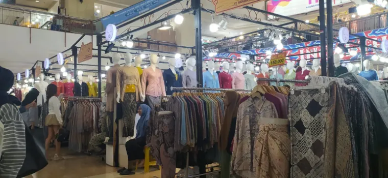
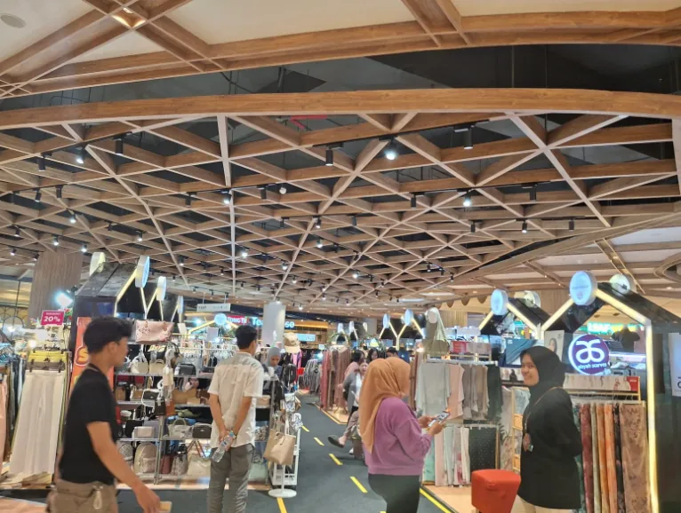